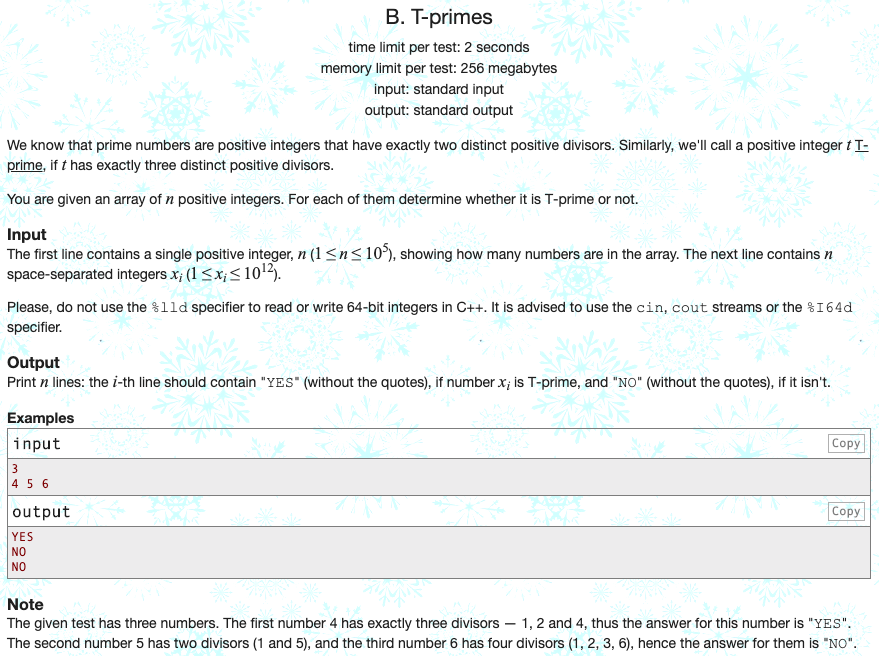

Codeforces 문제 풀이: 230B - T-primes

문제 파악
정확히 3개의 소인수로 분해되는 숫자를 T-prime이라 정의한다.
이때, 주어진 숫자들이 T-prime이면 “YES”를, 아니라면 “NO”를 출력한다.
문제 풀이
어떤 숫자 T-prime인지 판별하려면, 그 조건을 명세화해야 한다.
소인수가 3개가 되기 위해서, 1과 자기 자신을 제외한 숫자 1개는 제곱근이 되어야 한다.
또한, 그 제곱근이 소수여야 더 이상 소인수로 분해되지 않으므로, 3개의 소인수가 남을 수 있다.
따라서, T-prime이 되기 위한 조건은 다음과 같다.
- 대상 수의 제곱근은 소수여야 한다.
- 대상 수의 제곱근을 정수화하고 다시 제곱했을 때, 본래의 수와 동일해야 한다. (제곱근이 정수여야 한다.)
이때, 제곱근이 소수인지 판별하는 로직이 필요하다.
공간이 충분할 때, 효율적이고 빠른 방법으로 에라토스테네스의 체(Sieve of Eratosthenes)가 있다.
에라토스테네스의 체는 특정 범위의 수를 체로 걸러내듯이 소수가 아닌 수를 걸러 소수만 남겨내는 방법이다.
이때, 작은 수부터 차례대로 증가시키면서 소수인 경우, 범위 내 배수를 모두 소수에서 걸러내는 방식을 취한다. (배수는 분해가 된다는 뜻이므로, 소수에 해당하지 않는다.)
특정 범위의 수 목록에 소수 여부를 미리 저장해두고, 원하는 수의 소수 여부만 확인하므로 매우 빠르게 판별할 수 있다.
단순히 적은 횟수만 소수 판별을 한다면, 에라토스테네스의 체는 굳이 필요하지 않다.
소수 판별을 많이 해야 할 때, 그때그때 소수를 판별한다면 시간이 오래 걸리므로, 소수 여부를 미리 계산하는 것이다.
에라토스테네스의 체를 구할 때, 연산을 최소화하기 위해 대상 수의 제곱근까지만 순회하면 모든 소수를 구할 수 있다.
이 문제에서는 대상 수의 제곱근의 소수 여부가 궁금하므로, 소수 여부를 구하는 범위를 제곱근까지로 한정지었다.
만약 대상 수까지의 소수 여부를 구한다고 하면, 다음과 같이 구할 수 있다.
target = 1000000000000
primes = [False] * 2 + [True] * (target - 1)
limit = int(target ** .5) + 1
for i in range(2, limit):
if primes[i]:
for j in range(i ** 2, target + 1, i):
primes[j] = False풀이 소스
문제 풀이 환경: Python 3.7
1
2
3
4
5
6
7
8
9
10
11
12
13
_ = input()
x = map(int, input().split())
limit = int(1000000000000 ** .5) + 1
primes = [False] * 2 + [True] * (limit - 2)
for i in range(2, limit):
if primes[i]:
for j in range(i ** 2, limit, i):
primes[j] = False
for num in x:
sqrt = int(num ** .5)
print("YES" if primes[sqrt] and sqrt ** 2 == num else "NO")